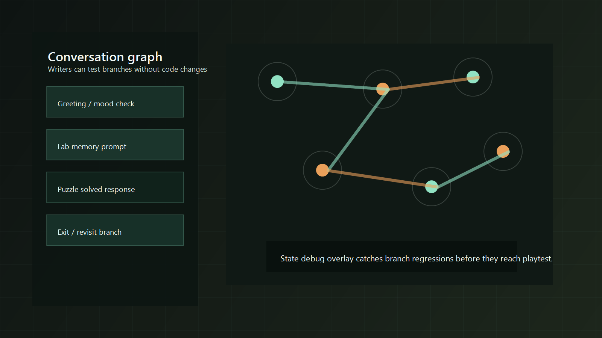
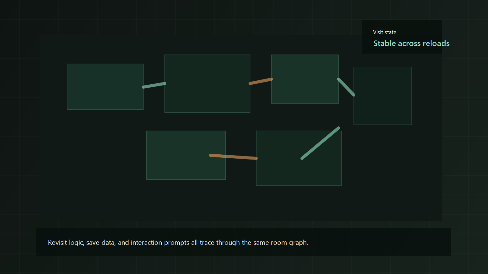

Sample supporting case study
Signal Bloom
This is sample placeholder content for a narrative or systems-heavy project page. The goal is to prove out the portfolio format before replacing it with a real production case study.
Placeholder content: use this page structure later for a real project with state logic, UI, or systems work.



What I owned
- Implemented dialogue state handling, revisit checks, and interaction prompts tied to current player knowledge.
- Built save/load support so branch state stayed stable across reloads and revisits.
- Created debug overlays for conversation branches and room state transitions.
- Worked with writing and design to make sure narrative intent stayed aligned with actual game state.
- Hooked the same state model into UI so prompts and response choices stayed in sync.
Challenge
The biggest risk was invisible breakage. A player could revisit a room, trigger a conversation in a different order, and quietly push the project into an inconsistent state that only showed up much later.
How I solved it
I moved the project toward a single source of truth for room and conversation state. That meant branching checks, interaction prompts, and save data all resolved through the same evaluator, with a debug layer that made hidden dependencies visible during testing.
Outcome
Writers could test branches more independently, bug reports became easier to reproduce, and the project gained a calmer sense of continuity. It is the strongest example in the portfolio of building systems that support both players and teammates.
Gallery